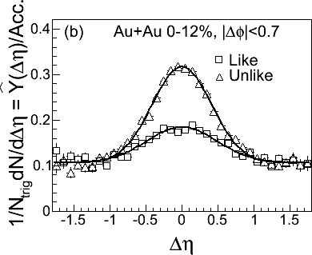
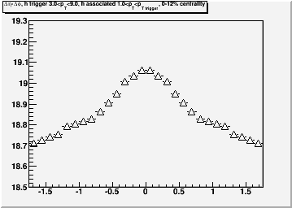

- Page 3, line 189-190, "are compared to those from Au+Au
collisions and
PYTHIA...". Do you mean "p+p collisions and PYTHIA" here?
Yes, thanks. Fixed.
- Page 13, line 744, "discussedin" shall be "discussed in".
Fixed, thanks.
- Line 579: Missing space
Fixed, thanks
- Fit
table II: what centrality is it? list. The 200 GeV
data were taken directly from the paper Lijuan recommended we cite
earlier so it should be cited.
Done thanks
- Lines
678-679: Not clear. Work on wording
We tried a new wording for this sentence - please check
- line 674, "the PHOBOS measurement the ridge out to" -> "the
PHOBOS measurement of the ridge out to"
Fixed, thanks
- line 685, delete "well".
Fixed, thanks. Also changed "collisions ar" to "collisions at" in the next line
- line 694, collision-> collisions.
Fixed, thanks - line 698-700, "the predict ratio is about 1.5 ..." -> "the
predict ratio of ... is about 1.5..." I would specify what's the ratio.
We tried a new wording. Please check.
- line 704-706, this sentence "... it would likely predict
correlations between particles in the ridge and with particles in the
ridge and the
trigger particle." does not seem smooth, could you check?
We tried a new wording. Please check.
- line 746, add a "and" after ",".
Fixed, thanks - line 758-761, about discussion of the ridge in pp and AA. In
the high multiplicity pp events, it's not clear that the flow is 0.
Therefore I
suggest change "without hydrodynamical flow in p+p collisions. Therefore quantitative calculations of the ridge in this class of models are
essential for understanding of the production mechanism of the ridge." -> "since hydrodynamical flow in p+p collisions is expected to be small if not negligible. Therefore quantitative calculations of the ridge in this class of models and the identified particle spectra measurements in the high multiplicity p+p collisions are essential for understanding of the production mechanism of the ridge."
Done thanks
- Abstract - pT dependence - added "the trigger and associated"
- Abstract - suggestion that we mention that the ridge was previously observed in AuAu200 added
- Last sentence - agreed, the current last sentence does not add much. Tried a new sentence - please check.
- Lines
110-111 - agreed, we rephrased this, please check
- Line 116 - we added references to the papers we cite in the next two paragraphs here.
- 131-132
- removed
- 144 - agreed, done
- 164 - changed "an artifact" to "the product"
- 179
- we would rather leave it as it is. The v3
model claims to create all of the ridge but does not claim to
describe all of the away side and we would like to keep the distinction
in our discussion.
- 183 - done
- 190 - this should have been d+Au
- 230
- Changed to z. We see that several different ways of defining
this have been used in STAR papers, including v_z
- 252-259 - agreed, split into two sentences
- 264-266 - done
- 268-270 - done
- Fig. 1 caption
- 291-293
- Yes this is true. This is why we lose tracks to track merging.
- 296-298
- We think we need the sentence because the track merging
correction is sufficiently complicated it is confusing. We have
changed the wording to address your concerns.
- Lines
around equation 2 - We
prefer to keep this as two sentences to avoid making sentences that are
too long and complex. We inserted the abbreviation h in the first
sentence.
- 317-325
- Yes,
this is correct. We prefer to keep this explanation because it
was added as a result of earlier discussions in the GPC.
- 337 - done
- 361 - 362 - the larger range is necessary because (a) we don't know a priori how large the range is and (b) we need a range large enough that we can match the two histograms.
- 364-365
- We think we need these sentences, which were added
at an earlier stage in the discussion. Otherwise people get
confused about what we do.
- Fig 3 - No, this was an artifact of the scales being different. The scale is arbitrary. The scales have now been fixed to be the same.
- Fig. 3 caption - done.
- 383 - minor typo. "at least four times"
- Fig. 4 caption - done (with minor modifications)
- Equation 3 - we have refined the wording
- 392 - we actually use the minimum now (this was from the PID paper.)
- 393 - we have refined the wording, please check
- 397 - we would rather not have O(20) papers cited here. We have changed the wording.
- 402 - Yes, the estruct method assumes a shape but the shape they assume also describes the data.
- 408-409 - agreed, changed
- 411-412 - We are stating that if the ZYAM assumption is incorrect, the mistake will tend toward underestimating the true yield rather than generating the signal.
- 421-422 - We prefer our wording.
- 423 - we have tweaked the wording please check
- 424-426 - we mean we used one method from each class we just described for determining the error in each system. If it is not clear please let us know.
- 426 - done
- 433 - yes, the error in Au+Au uses v2{FTPC}. See Marco's page
- 446 - done
- 447-449 - we now specify very clearly in the text that v2{FTPC} is used for both energies of Cu
- 453 - we changed the wording please check.
- 463 - We slightly modified the wording.
- 468 - done
- Figure 5:
I tried to match the scale of the published figure. Our data is the sum of both like and unlike signs. Particularly if one looks at the like sign data, the published figure also shows a slight delta-eta dependence. To compare to our figure, the like and unlike sign histograms must be added and the backgrounds must be shifted so that they are comparable. This is done below:Figure 1 from 3 particle paper, trig 3-10 GeV/c assoc 1-3 GeV/c
Our analysis trig 3-9 GeV/c, assoc 1-3 GeV/c



(Note that the scales were shifted arbitrarily - so that the fits roughly line up.) Data from this analysis are shown as open triangles and from the published paper as closed triangles. There two differences in the analyses: the dphi region used (|dphi|<0.66 for this analysis, |dphi|<0.7 for the published paper), the track merging correction (applied in this analysis and not the published data), and the reflection (applied in this analysis but not the published data). The difference in the dphi range leads to the raw data in this analysis being slightly higher than the raw data than the published data. These are not identical analyses. Without the track merging correction the peak is slightly lower, but this effect is strongly dependent on kinematics. Comparison of the corrected and uncorrected plots demonstrate that this is not a large effect in this kinematic range.
- Fig. 6 caption - done
- 489 - We added the phrase "using bin counting" to this sentence. Please check.
- 517 - We have added an explicit discussion of this in the v2 method section and in the discussion on Figure 6.
- 546 - we struck this sentence
- Figure 9 comment - it is not feasible to write the centrality for every system and energy on every figure. Figure 8, 12, and 13 are the centrality dependence. For Figure 9 the problem is that the centrality bin is different for 62 (0-80%) and 200 GeV (40-80%). For Fig. 11 the centrality labels would not be applicable to every panel. The specific centrality bins are defined in the caption and we feel this is sufficient.
- 555 - We think we don't need to specify that the PYTHIA simulations are done in the same way as the measurement.
- 580 - Surprising is on lines 559, 580, 606, and 773.
559 - we changed this to "..good agreement is unanticipated."
580 - we really feel that surprising is the appropriate word to describe the agreement of PYTHIA with Fig. 9 so have kept surprising here.
606 - changed "not surprising" to "expected"
773 - again, we really feel the result is surprising. If you have a suggestion for a wording change you feel is more appropriate we welcome it, however, we do want to stress this aspect of the paper.
- 636 - wording refined
- 642 - this table is not part of the method section. This table is a table specifically for the values used in the npart dependence, specifically so that people can "undo" zyam if they want to. We have added explicit cross references in the figure and table captions.
- 648 - we changed "no" to little and struck the sentence earlier that said that there was a centrality dependence.
- Fig. 12 caption - we added the "the" and "is" and we went back and added this for other figures.
- Fig. 13 caption - we realized the efficiency systematic error actually cancels out in the ratio so have removed the sentence about the error due to the efficiency error.
- 673 - we have split these two sentences
- 674 - fixed earlier
- 677 - no change done. We see no reason not to call the structure observed by CMS a ridge, as has been done in the discussion of the CMS result. We already take into account that the structure in p+p may arise from a different physical origin in the discussion.
- 686 - already fixed earlier
- 687 - This is not contradictory. The previous sentence says the the momentum kick model describes the Au+Au 200 well. This sentence says that the momentum kick model does not describe the difference between Cu+Cu and Au+Au well.
- 698 - done
- 710 - We would request clarification on this remark. We understand how surface bias would affect the reaction plane dependence, however, except in an extreme case where the hard partons are 100% biased towards the surface there should be an increase in the average path length traveled.
- 717 - done
- 722 - done
- 744 - already fixed
- 773 - We do not feel that these statements are too strong. We can discuss this again.
- 785 - we discussed this at the meeting already. We welcome suggestions.
- References fixed.
- Added reference to Paul on line 175
- According to the Phys. Rev. style guide, anywhere where a symbol
involves multiple characters the characters should be in roman not in
math.
Fixed, thanks. - Change discussion of models to separate models into things from the initial state and things from final state interactions
done - please check
We have a background given by the form:
dB/d(dphi) = b(1+2 v2a v2b cos(dphi))
When we determine the yield the background we subtract is given by
B = b(1+2 v2a v2b I)
where I is the integral over cos(dphi) with respect to dphi over [-0.78,0.78]. It is a constant.
When we propagate the error on this background the error is given by the square root of the sum of the squares of:
2 b v2a I e(v2b) from the error on v2b
2 b v2b I e(v2a) from the error on v2a
2 v2a v2b I e(b) from the error on b
Comparing 0-10% Cu+Cu to 40-50% Au+Au because the ridge is comparable in size in these two bins (both at 200 GeV) and looking up the v2's in the table, the v2's of the Au+Au are roughly twice as large as in Cu+Cu. In addition, the error on v2 is roughly twice the size in Au+Au as in Cu+Cu. This would predict an error bar roughly four times as large, and this is indeed what we see.